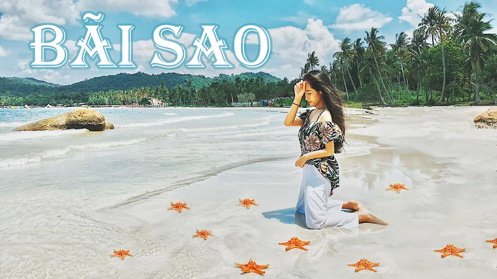
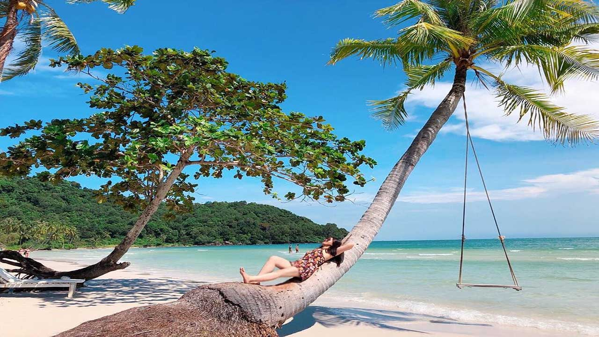
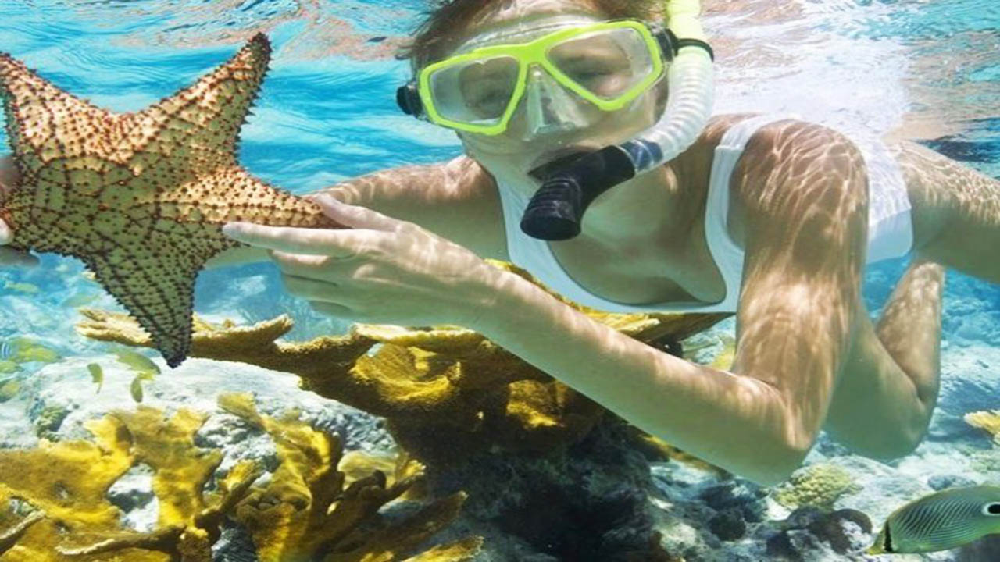

by Hồng béo
Để đi du lịch Bãi Sao Việt Nam thì bạn có thể đi bất cứ vào mùa nào. Tuy nhiên theo lời của người dân bản địa thì thời điểm đẹp nhất du lịch Bãi Sao từ khoảng tháng 6 đến tháng 10.
Về giá vé tham quan Phú Quốc Bãi Sao thì hoàn toàn miễn phí. Ngày trước thì có 1 số nhà hàng sát bãi biển họ thu tiền, nhưng giờ thì hết rồi. Nếu được, bạn cũng nên gọi đồ uống ủng hộ bên nhà hàng chút cho họ vui vẻ, vì khi từ cổng để ra bãi tắm, bạn sẽ đi qua nhà hàng của họ. Đấy là vé vào cổng thôi nha, còn các dịch vụ ghế, tắm nước ngọt, phao bơi, chơi mô tô nước… thì vẫn tính phí nhé.
Nước biển trong vắt nên có thể nhìn thấu đáy biển. Vì thế đây là nơi lý tưởng để lặn biển ngắm san hô. Bạn sẽ được chiêm ngưỡng những rặng san hô cùng hệ sinh thái biển tràn ngập màu sắc. Một chuyến lênh đênh trên biển để đi tìm những điều hấp dẫn là trải nghiệm tuyệt vời không thể bỏ lỡ khi đến đây. 